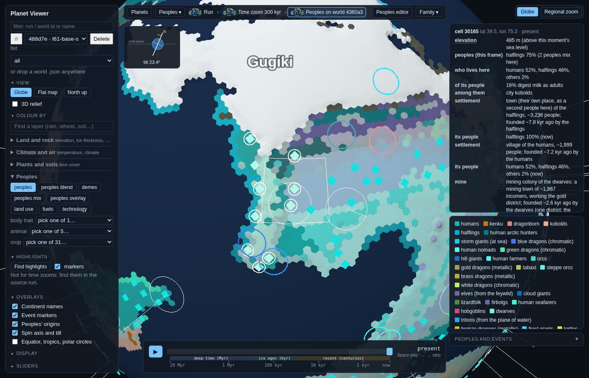
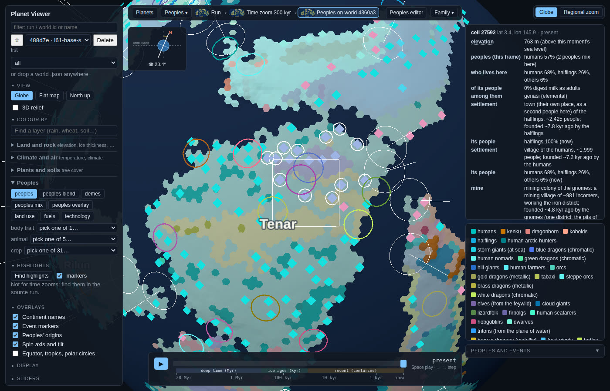
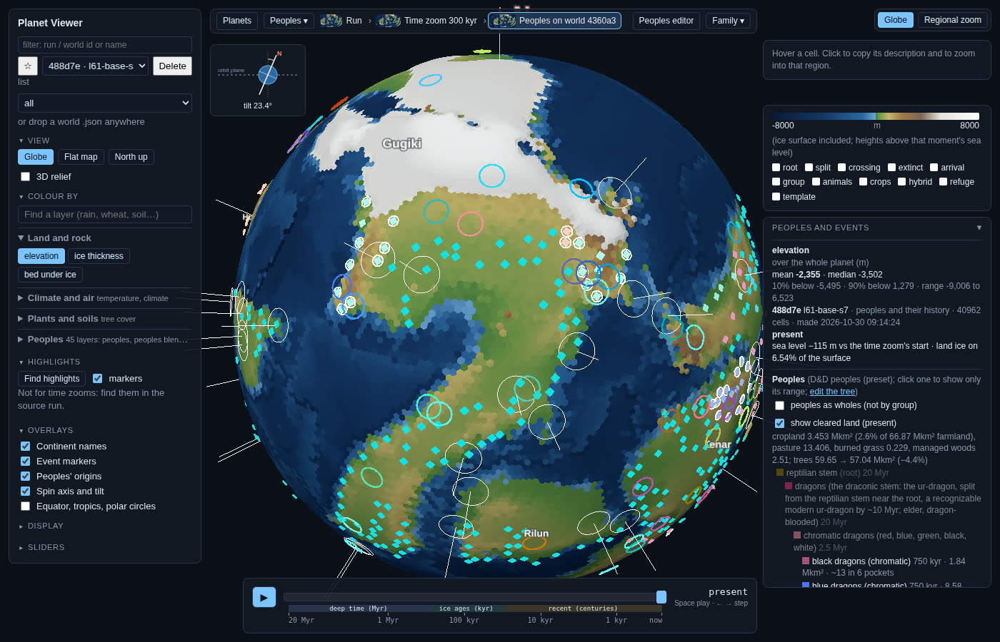

Only what needs you, plus what's running. D10–D16 are answered and cleared off. Open: D18 (mines, under "Mines are in") and D17, the "how common should a people be" weight. Its numbers fill in when lane 73's test batches finish, and the page is updated in place when anything else needs you.
"Your call" or "wait for the numbers" are fine answers.
What you asked: instead of a weight or min/max caps, let birth rates, lifespans and survival drive the numbers, and let
Feywild peoples arrive in force. A research pass read the 5e age traits for every people in the tree and real human demography.
The full report is docs/review/peoples-demography/report.md.
The finding you won't love: breeding rate decides how fast a people grows, spreads and recovers, not how many it ends up with. Once land is full, births balance deaths for everyone. How many live there comes from how many people a km² feeds and how much land they hold. On canon ages, kobolds, goblins and orcs grow about 1.5–3× as fast as humans, dwarves and gnomes about ¼, elves about ⅐. So life history, done properly, makes dwarves and elves rarer, not commoner. They lose races for empty land, recover slowly, and can't take steady losses: at 0.5% a year lost to raids or dragons, humans keep ~43% of their numbers, kobolds ~65–70%, and dwarves, gnomes and elves nothing. That fits canon (long-lived, few), and your kobold and goblin picture fits exactly: breed fast, die young, shrug off losses. Canon gives no birth rates at all. Lifespans imply a dwarf woman bears ~6–7 children about 24 years apart, an elf about 39 years apart.
I'll build these regardless, since they're sound: ages, breeding class (slow, mammal, brood) and a fertile window per people in the setup, driving spread speed, recovery and how quickly a people takes land. Also portal arrivals: portals already exist in the model, and the D&D setup just has them switched off. Arrivals would come through 6–10 portals with a founding size you set per people ("a million elves through ten portals").
Your call: what makes mainline peoples common?
Your point: a preset that only works at one set of values is useless for Seven Meals, a five-race world, or a world with different races made common.
Each peoples change used to be judged on one or two seeds of one tree. That's how you end up with something that "barely works". Lane 77 builds the test every future change will have to pass instead:
The lane then reports which of today's fixes are general mechanisms and which were point fixes that only helped D&D at one seed (the kobold date and dwarf mobility are suspects). It also ranks the general bugs, like the two above. Life history and density (D17) get judged on the same test.
Lane 72 (your D12) is merged. Peoples who live by mining (dwarves, kobolds, gnomes, drow) now send mining towns of incomers to rich ore within 300 km of their own land, like German miners invited into medieval Hungary. Everyone else opens a mine only when they need one: they farm or herd, or there's a town nearby to sell to, or they have seen a mine work next door for about 1,000 years. That last rule is your point about First Nations peoples knowing copper without opening mines. Each diamond is a whole mining district, the pits and town of one seam, not a single pit. That's why there are a few hundred per world.
In the viewer: Overlays → Settlements → "only the mines" shows every district at any zoom. Mining colonies have a white ring. Each link below opens straight onto one, with its hover card showing.



"Ore country" covered 46% of the land, because the code counted any 50% chance of a deposit in a big map cell as a mining district. Real ore districts are rare and clustered. Lane 74 tightened it to rich deposits only, 7.7% of land. That's built and tested, but held from merging, because it cuts the count you already called low:
| What | Lane | Where it stands |
|---|---|---|
| Frozen-over worlds (D10). The 7-world screen is done. The three ice fixes together froze 0 of 7 (main: 4), but they shrank Earth's real Greenland from 165 map cells to 68, which breaks my guard rail. The gentle fix alone keeps Greenland but leaves 2 frozen. Looking at each frozen world closely: in 3 of 4, the climate itself got very cold (6–10 °C below today) after a fast CO₂ drop. None is polar geography. So the next round goes after the root cause: why the planet's carbon thermostat (cold slows rock weathering, so CO₂ should build back) doesn't pull it out. Also, "ice must survive the warmest phase" is being softened to "thick enough to outlast it", as Greenland did in the last warm interglacial. | 75 | Short written diagnosis first, then a 7-world screen with a combined batch |
| Peoples stress test: robustness across trees, dates and knobs | 77 | Building and running, about 4 h |
| Dragon paper, revised (D14, D16): mortality split by age, a pressure setting per tech era, and the food-channel loss broken down by cause | 63 | Re-runs, then checks and peer review |
| Source hunt, pass 2 (about 425 tech dates) | – | Once the web-search allowance refills |
| You said | What happened |
|---|---|
| Pass bar: should every Earth-like be habitable? | Now two tiers. Hard failures (frozen over, boiled, oceans lost, CO₂ crash) must pass 100%, and each failing world gets its own investigation. A world with its continents at the poles can be a real icehouse, but only if the investigation shows that. The softer score keeps its 60–70% bar. We don't chase a closer Earth match. |
| Fewer worlds; throw ten things in at once | Now standard: one world to diagnose, about 6 to confirm, combined batches alongside single fixes, the full test once before merging. |
| D10: stop the 72-world test; ice sheets back in v1; can warm months melt more? | Stopped. The model already averaged melt over the orbit. The real gap was that warm phases barely reached the ice. Lane 71 is fixing that (above). |
| D11: park monsoons for v2, find a source | Parked. The land and sea drag sources are saved in the repo. |
| D12: dwarves find ore, the least forced way; links must open the right view | Merged (lane 72). See "Mines are in". Every link on it was tested to open on a mine. |
| D13: end the history at "D", extend if nobody's arrived | On the ticket (PW-1134). Built after the current lanes. |
| D14/D16: dragon pressure as a setting; dragons press back on small folk | Lane 63 (above). The setting, and a draft for dragons eating small folk to keep game plentiful. Metallic versus chromatic temperament comes later. |
| D15: skip; Binford someday | Noted. |
| Mixing peoples needs more detail: try L8/L9 | Ticket filed (PW-1143). An experimental finishing pass for v2. |